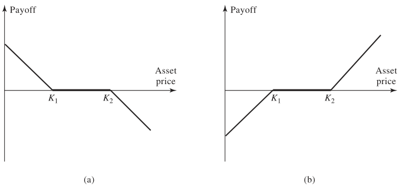

10 Options on Indices, Currencies, and Futures
- HULL, John. Options, futures, and other derivatives. Ninth edition. Harlow: Pearson, 2018. ISBN 978-1-292-21289-0.
- Chapter 17 - Options on Stock Indices and Currencies
- Chapter 18 - Futures Options and Black’s Model
- PIRIE, Wendy L. Derivatives. Hoboken: Wiley, 2017. CFA institute investment series. ISBN 978-1-119-38181-5.
- Chapter 4 - Valuation of Contingent Claims
Learning Outcomes:
- Master the use of index options for hedging and portfolio protection; understand the benefits compared to direct stock transactions.
- Apply models like Black-Scholes for valuing index options.
- Utilize currency options for hedging foreign exchange risks; grasp valuation techniques using both spot and forward prices.
- Evaluate European futures options using Black’s model; distinguish between options on futures and physical commodities.
10.1 Options on Stock Indices
Options on stock indices allow investors to speculate on the direction of an entire market index or hedge their portfolio market risk without directly transacting the component stocks. Some of the most widely traded stock index options in the United States are:
S&P 100 Index (OEX and XEO): These options provide a broad market exposure to the top 100 stocks in the S&P index. OEX options are American-style, allowing exercise at any point before the expiration date, whereas XEO options are European-style, exercisable only at expiration.
S&P 500 Index (SPX): A benchmark index for U.S. equities, these European-style options reflect the performance of 500 large-cap stocks and are a key tool for institutional investors for hedging and exposure adjustment.
Dow Jones Index (DJX): Priced at 1/100th of the Dow Jones Industrial Average, these options are a cost-effective way to gain exposure to the movements of the Dow Jones, consisting of 30 significant stocks.
Nasdaq 100 Index (NDX): These European-style options represent the 100 largest non-financial stocks from the Nasdaq, making them crucial for investors focused on technology and innovation sectors.
All mentioned index options are exchange-traded, have their contract size set at 100 times the index value, and are settled in cash, which simplifies the transaction and eliminates the need for physical delivery of the underlying securities.
10.1.1 Using Index Options for Portfolio Insurance
Portfolio insurance is a strategy used to protect against market declines through the use of put options. The strategy involves purchasing puts to cover potential losses in a portfolio’s value due to adverse market movements.
- Initial Setup:
- Let \(S_0\) represent the current index value.
- Let \(K\) be the strike price of the put option.
- The portfolio’s beta (\(\beta\)) indicates its sensitivity to market movements relative to the index.
- Insurance Strategy:
- For a portfolio with \(\beta = 1.0\), purchase one put option for every \(\$100 \times S_0\) of portfolio value to hedge against downturns.
- If \(\beta \neq 1.0\), adjust the number of put options accordingly, purchasing \(\beta\) options per \(\$100 \times S_0\).
- In both cases, \(K\) is chosen to give the appropriate insurance level.
Portfolio Details:
- Portfolio \(\beta\) = 1.0
- Portfolio Value = $500,000
- Current Index Value = 1,000
Objective: Insure the portfolio so its value does not fall below $450,000 in the next three months.
Implementation Strategy:
- The manager opts to buy put options as a form of insurance. Since each contract covers 100 times the index value, the manager needs one put option for every $100,000 of the portfolio value (i.e., \(500,000 / 100 \times 1,000 = 5\) put options).
- These options have a strike price (\(K\)) of 900 (10% decrease).
Mechanism of Insurance:
If the index drops to 880 in three months, the portfolio’s expected value would decrease proportionately to about $440,000.
The put options’ payoff can be calculated as follows:
\[\text{Payoff} = 5 \times \left[ (900 - 880) \times 100 \right] = \$10,000\]
This payoff compensates for the decrease in the portfolio’s value, effectively bringing it up to the insured value of $450,000.
Consider a portfolio with a \(\beta\) of 2.0. This high beta implies that the portfolio’s returns are expected to be twice as volatile as the underlying index’s returns. Currently, the portfolio is valued at $500,000, while the index stands at 1,000. With a risk-free rate of 12% per annum and a dividend yield of 4% on both the portfolio and the index.
Objective: Insure the portfolio so its value does not fall below $450,000 in the next three months.
Required Number of Contracts: \((500,000 / 100,000) \times 2 = 10\) put option contracts are needed.
Determining the Appropriate Strike Price Using CAPM Model
Index Return Scenario: Assume the index rises to 1,040 in three months, reflecting a 4% return.
Total Return Including Dividends: \(4\%\) (index return) + \(1\%\) (dividends) = 5%.
Excess Return Over Risk-Free Rate: \(5\%\) - \(3\%\) (equivalent quarterly risk-free rate) = 2%.
Excess Return for Portfolio: \(2\% \times 2 = 4\%\) (due to beta of 2.0).
Net Portfolio Return Calculation: Excess return (4%) + risk-free rate over three months (3%) - dividend yield (1%) = 6%.
Projected Portfolio Value: \(\$500,000 \times 1.06 = \$530,000\).
Result: Similar calculations can be carried out for other values of the index at the end of the three months. Appropriate strike price for the 10 put option contracts that are purchased is 960 (or 955 when we include dividends).
| Value of Index in Three Months | Value of Portfolio in Three Months ($) |
|---|---|
| 1,080 | 570,000 |
| 1,040 | 530,000 |
| 1,000 | 490,000 |
| 960 | 450,000 |
| 920 | 410,000 |
| 880 | 370,000 |
10.2 Valuation of Stock Index Options
The valuation of European stock index options hinges on the understanding of asset price dynamics under different conditions. The probability distribution of the asset price at maturity \(T\) remains consistent in two distinct scenarios: 1. When the asset originates at a price \(S_0\) with a yield of \(q\). 2. When the asset starts at a discounted price of \(S_0e^{-qT}\), assuming it yields no income.
By utilizing this equivalence, we simplify the valuation process for European options. Instead of accounting for dividends directly, we adjust the initial stock price to \(S_0e^{-qT}\) and proceed with the valuation as if the stock pays no dividends. This approach effectively streamlines the calculation by isolating the impact of yields and focusing on pure price movements.
10.2.1 Extending Lower Bounds and Put-Call Parity
The intrinsic value forms the lower bound for option prices, ensuring that the option price does not fall below its immediate exercise value. These bounds are critical in preventing arbitrage opportunities.
Lower Bound for Call Options: \[c \geq \max (S_0 e^{-qT} - Ke^{-rT}, 0)\]
Lower Bound for Put Options: \[p \geq \max (Ke^{-rT} - S_0 e^{-qT}, 0)\]
Put-call parity establishes a risk-neutral relationship between the prices of European put and call options with identical strike prices and expirations.
- Put-Call Parity \[c + Ke^{-rT} = p + S_0 e^{-qT}\]
10.2.2 Extending Black-Scholes Model
The Black-Scholes formula for pricing European options underlies much of modern financial derivatives trading. This extedned version considers the adjusted stock price that accounts for divid yield (\(q\)). The formulas for calls and puts are as follows:
- Call Option Price: \[c = S_0 e^{-qT} N(d_1) - K e^{-rT} N(d_2)\]
- Put Option Price: \[p = K e^{-rT} N(-d_2) - S_0 e^{-qT} N(-d_1)\]
Where: \[d_1 = \frac{\ln (S_0 / K) + (r - q + \sigma^2 / 2)T}{\sigma \sqrt{T}}\] \[d_2 = d_1 - \sigma \sqrt{T}\]
10.2.3 Alternative Formulas Using Forward Prices
The valuation of European options can also be efficiently conducted using forward prices, which simplifies the treatment of dividends and risk-free rates. This approach directly incorporates the expected future price of the asset, eliminating the need to adjust the current price for dividends and rates separately.
- Call Option Price: \[c = e^{-rT}[F_0 N(d_1) - K N(d_2)]\]
- Put Option Price: \[p = e^{-rT}[K N(-d_2) - F_0 N(-d_1)]\]
Where \(F_0\) is the forward price of the asset, representing the expected price at time \(T\), adjusted for the risk-free rate \(r\) and the dividend yield \(q\). The terms \(d_1\) and \(d_2\) in these formulas are modified to incorporate the forward price:
\[d_1 = \frac{\ln (F_0 / K) + \sigma^2 T / 2}{\sigma \sqrt{T}}\] \[d_2 = d_1 - \sigma \sqrt{T}\]
The forward price \(F_0 = S_0 e^{(r-q)T}\) effectively encapsulates the expected growth of the asset price due to the net effect of interest rates and dividend yields.
This methodology is particularly useful for valuing options on assets that pay dividends, as it directly uses the futures or forward index price, which corresponds to a contract maturing at the same time as the option.
10.2.4 Implied Forward Prices and Dividend Yields
Forward prices and dividend yields can also be derived from market prices of European calls and puts, enabling a deeper understanding of market expectations and assisting in strategic investment decisions.
Implied Forward Price: \[F_0 = K + (c - p) e^{rT}\] This formula calculates the implied forward price from the current prices of European calls and puts with the same strike price and time to maturity. It reflects the market’s expectation of the asset price at the option’s expiry.
Implied Dividend Yield: \[q = -\frac{1}{T} \ln \frac{c - p + K e^{-rT}}{S_0}\] This expression estimates the average dividend yield expected during the life of the option, derived from the observed prices of calls and puts.
These calculations are essential for estimating term structures of forward prices and dividend yields, particularly relevant in over-the-counter (OTC) European options.
For American options, which can be exercised at any point up to and including the date of expiration, understanding the term structure of dividend yields is crucial due to their potential impact on early exercise decisions.
10.3 Currency Options
Currency options are financial instruments that provide an essential hedging mechanism against foreign exchange risk, utilized predominantly by corporations with international exposure. These options are traded on structured exchanges such as NASDAQ OMX and extensively in the over-the-counter (OTC) market, reflecting their importance in financial risk management.
Currency as an asset class behaves similarly to stocks that provide a yield, with the yield in this case being the foreign interest rate, \(r_f\). This similarity allows the application of stock option pricing methods to currency options, considering \(r_f\) as analogous to the dividend yield in stock options.
10.3.1 Range Forward Contracts
Range forward contracts are bespoke financial agreements that help manage currency risk by setting bounds on the exchange rate fluctuations:
When expecting to pay currency, one typically sells a put option with a lower strike price, \(K_1\), and buys a call option with a higher strike price, \(K_2\) (\(K_2 > K_1\)). This structure ensures that the exchange rate remains between \(K_1\) and \(K_2\).
Conversely, when expecting to receive currency, one buys a put option at \(K_1\) and sells a call option at \(K_2\).
The cost of the put typically offsets the premium received for the call, balancing the overall cost of the contract.

These contracts are particularly advantageous for businesses that seek to mitigate the risk of adverse currency movements while retaining some potential for benefiting from favorable movements within a predetermined range.
10.3.2 Extending Black-Scholes Model
Using the Black-Scholes model adjusted for currencies, we derive the following formulas:
Call Option Price: \[c = S_0 e^{-r_f T} N(d_1) - K e^{-rT} N(d_2)\]
Put Option Price: \[p = K e^{-rT} N(-d_2) - S_0 e^{-r_f T} N(-d_1)\]
Where: \[d_1 = \frac{\ln (S_0 / K) + (r - r_f + \sigma^2 / 2)T}{\sigma \sqrt{T}}\] \[d_2 = d_1 - \sigma \sqrt{T}\]
10.3.3 Alternative Formulas Using Forward Prices
The use of forward prices further simplifies the valuation by incorporating expectations about future exchange rates:
- Call Option Price: \[c = e^{-rT}[F_0 N(d_1) - K N(d_2) ]\]
- Put Option Price: \[p = e^{-rT} [K N(-d_2) - F_0 N(-d_1)]\]
Where: \[d_1 = \frac{\ln (F_0 / K) + \sigma^2 T / 2}{\sigma \sqrt{T}}\] \[d_2 = d_1 - \sigma \sqrt{T}\]
Where \(F_0 = S_0 e^{(r-r_f)T}\) represents the forward exchange rate, adjusted for the interest rate differential between the two currencies. This model encapsulates the market’s expectations of future exchange rates, reducing the need for separate adjustments for interest rates and foreign yields in the pricing formulas.
10.4 Options on Futures and Black’s Model
Options on futures are derivatives that confer the right, but not the obligation, to enter into a futures contract at a predetermined price before a specified expiration date. These options are categorized by the maturity month of the underlying futures contract. Typically, these options are American-style, meaning they can be exercised at any time up to and including the expiration day, which usually aligns with or occurs a few days before the earliest delivery date of the underlying futures contract.
10.4.1 Mechanics of Futures Options
Call Options
When a call option on a futures contract is exercised, the holder assumes a long position in the futures contract. Additionally, the holder receives a cash amount equivalent to the difference between the futures price at the most recent settlement and the strike price of the option.
- Example:
- A September call option on copper futures has a strike price of 320 cents per pound.
- The option is exercised when the futures price is 331 cents, with the most recent settlement price at 330 cents.
- Each contract represents 25,000 pounds of copper.
- Upon exercising, the trader receives a long position in the September futures contract and a cash payout of \(25,000 \times 10 \text{ cents} = \$2,500\).
- If desired, the position in the futures contract can be closed out immediately to get \(25,000 \times (331 - 330) \text{ cents} = \$250\).
- The total payoff from exercising the option is $2,750.
Put Options
Conversely, when a put futures option is exercised, the holder gains a short position in the futures contract. Similar to the call option, there is a cash payout which in this case is the difference between the strike price and the futures price at the most recent settlement.
- Example:
- A December put option on corn futures has a strike price of 600 cents per bushel.
- The option is exercised when the futures price is 580 cents per bushel, with the most recent settlement price at 579 cents per bushel.
- Each contract covers 5,000 bushels.
- The trader receives a short position in the December futures contract and a cash payout of \(5,000 \times (600 - 579) \text{ cents} = \$1,050\).
- If desired, the position in the futures contract can be closed out immediately to get \(5,000 \times (579 - 580) \text{ cents} = -\$50\).
- The total payoff from exercising the option is $1,000.
10.4.2 Payoffs of Futures Options
The payoff for futures options, if the position in the futures contract is closed out immediately after exercising the option, is straightforward:
Call Option Payoff: \[ \text{Payoff} = F - K \] Where \(F\) is the futures price at the time of exercise, and \(K\) is the strike price of the option.
Put Option Payoff: \[ \text{Payoff} = K - F \] Again, \(F\) represents the futures price at the time of exercise.
10.4.3 Potential Advantages of Futures Options over Spot Options
Futures options offer several distinct advantages over spot options under certain conditions:
- Equivalence with Spot Options:
- European futures options and European spot options are equivalent in value when the futures contract matures concurrently with the option’s expiration. This equivalence arises because both types of options will reflect the same underlying economic exposures at expiration.
- Market Liquidity:
- Futures contracts often enjoy greater liquidity compared to many underlying assets, particularly in markets where the underlying assets are large or illiquid by nature (e.g., commodities, certain financial instruments). This increased liquidity generally makes it easier and potentially less costly to trade futures options.
- Settlement Characteristics:
- Upon exercising a futures option, the holder acquires a position in the futures contract rather than the immediate delivery of the underlying asset. This feature can be particularly advantageous in markets where physical delivery is less desirable or practical.
- Unified Trading Platforms:
- Futures options and the underlying futures contracts typically trade on the same exchange. This unification can simplify access, monitoring, and execution for traders and investors, enhancing market efficiency.
- Cost Efficiency:
- The transaction costs associated with trading futures options can be lower than those for trading spot options, largely due to standardized contract terms and centralized trading venues which foster more competitive pricing.
10.4.4 Put-Call Parity and Lower Bounds for European Futures Options
Put-Call Parity
Consider the following two portfolios:
- European call plus \(Ke^{-rT}\) of cash.
- European put plus long futures plus cash equal to \(F_0 e^{-rT}\).
Both portfolios must be worth the same at time \(T\). Therfore, for European futures options, the put-call parity condition is expressed as:
\[c + Ke^{-rT} = p + F_0e^{-rT}\]
Here, \(c\) and \(p\) represent the prices of the European call and put options, respectively, \(K\) is the strike price, \(F_0\) is the current futures price, and \(r\) is the risk-free interest rate. This equation ensures that no arbitrage opportunities exist between buying a call and selling a put when adjusted for the present value of the strike price and the futures price.
Lower Bounds
The lower bounds for the prices of futures options reflect the minimum value these options must hold to prevent arbitrage:
Call Option Lower Bound: \[c \geq (F_0 - K)e^{-rT}\]
Put Option Lower Bound: \[p \geq (K - F_0)e^{-rT}\]
10.4.5 Black’s Model for Valuing Futures Options
In the pricing of futures contracts, a pivotal assumption is that no initial investment is required, leading to a zero expected return in a risk-neutral environment. This implies that the expected growth rate of the futures price is also zero, essentially treating the futures price as equivalent to a stock paying a continuous dividend yield equal to the risk-free rate \(r\). This approach simplifies the valuation by aligning the futures price dynamics with those of a dividend-paying stock.
Black’s model extends the classic Black-Scholes framework to futures options, incorporating unique aspects of futures pricing:
- Model Parameters:
- \(S_0\), the current futures price, is denoted by \(F_0\).
- \(q\), typically representing the dividend yield in stock options, is set to the domestic risk-free rate \(r\) in the context of futures. This setting neutralizes the expected growth of the futures price, maintaining the risk-neutral valuation framework.
- Historical Context:
- The model was first proposed by Fischer Black in 1976 and is specifically adapted for European options on futures, providing a practical solution that sidesteps the complexities of estimating income on the underlying asset.
10.4.6 Pricing Formulas
The formulas for valuing European futures options using Black’s model are derived as follows:
- Call Option Price: \[ c = e^{-rT}[F_0 N(d_1) - K N(d_2) ] \]
- Put Option Price: \[ p = e^{-rT} [K N(-d_2) - F_0 N(-d_1)] \]
Where: \[ d_1 = \frac{\ln (F_0 / K) + \sigma^2 T / 2}{\sigma \sqrt{T}} \] \[ d_2 = d_1 - \sigma \sqrt{T} \]
10.4.7 Futures Option Price vs. Spot Option Price
Comparing futures options to spot options under different market conditions reveals nuanced valuation dynamics:
- Normal Market Conditions (Contango):
- If futures prices are higher than spot prices, an American call option on futures is typically more valuable than a similar call option on the spot market. Conversely, an American put option on futures is less valuable than its spot counterpart.
- Inverted Market Conditions (Backwardation):
- In situations where futures prices are lower than spot prices, the value relationships reverse: American calls on futures become less valuable, whereas puts on futures gain in relative value.
10.5 Practice Questions and Problems
10.5.1 Index Options
- A stock index is currently 300, the dividend yield on the index is 3% per annum, and the risk-free interest rate is 8% per annum. What is a lower bound for the price of a six- month European call option on the index when the strike price is 290?
Lower bound = 16.90
- Consider a stock index currently standing at 250. The dividend yield on the index is 4% per annum, and the risk-free rate is 6% per annum. A three-month European call option on the index with a strike price of 245 is currently worth $10. What is the value of a three-month put option on the index with a strike price of 245?
Put option value = 3.84
- Calculate the value of a three-month at-the-money European call option on a stock index when the index is at 250, the risk-free interest rate is 10% per annum, the volatility of the index is 18% per annum, and the dividend yield on the index is 3% per annum.
Call option value = 11.15
- An index currently stands at 696 and has a volatility of 30% per annum. The risk-free rate of interest is 7% per annum and the index provides a dividend yield of 4% per annum. Calculate the value of a three-month European put with an exercise price of 700.
Put option value = 40.6
10.5.2 Currency Options
- A foreign currency is currently worth $1.50. The domestic and foreign risk-free interest rates are 5% and 9%, respectively. Calculate a lower bound for the value of a six-month call option on the currency with a strike price of $1.40 if it is (a) European and (b) American.
Lower bound European = 0.069 Lower bound American = 0.10
- Calculate the value of an eight-month European put option on a currency with a strike price of 0.50. The current exchange rate is 0.52, the volatility of the exchange rate is 12%, the domestic risk-free interest rate is 4% per annum, and the foreign risk-free interest rate is 8% per annum.
Put option value = 0.0162
- A currency is currently worth $0.80 and has a volatility of 12%. The domestic and foreign risk-free interest rates are 6% and 8%, respectively. Use a two-step binomial tree to value (a) a European four-month call option with a strike price of 0.79 and (b) an American four-month call option with the same strike price.
- European Option Value: $0.0235
- American Option Value: $0.0250
10.5.3 Futures Options
- Consider a two-month futures call option with a strike price of 40 when the risk-free interest rate is 10% per annum. The current futures price is 47. What is a lower bound for the value of the futures option if it is (a) European and (b) American?
Lower bound European = 6.88 Lower bound American = 7
- Consider a four-month futures put option with a strike price of 50 when the risk-free interest rate is 10% per annum. The current futures price is 47. What is a lower bound for the value of the futures option if it is (a) European and (b) American?
Lower bound European = 2.90 Lower bound American = 3
- Calculate the value of a five-month European futures put option when the futures price is $19, the strike price is $20, the risk-free interest rate is 12% per annum, and the volatility of the futures price is 20% per annum.
Put option value = 1.50
- A futures price is currently 25, its volatility is 30% per annum, and the risk-free interest rate is 10% per annum. What is the value of a nine-month European call on the futures with a strike price of 26?
Call option value = 2.01
- A futures price is currently 60 and its volatility is 30%. The risk-free interest rate is 8% per annum. Use a two-step binomial tree to calculate the value of a six-month European call option on the futures with a strike price of 60. If the call were American, would it ever be worth exercising it early?
- European Option Value: \(4.3155\)
- American Option Value: \(4.4026\)
- Suppose that a one-year futures price is currently 35. A one-year European call option and a one-year European put option on the futures with a strike price of 34 are both priced at 2 in the market. The risk-free interest rate is 10% per annum. Identify an arbitrage opportunity.
Arbitrage profit = $1
10.5.4 Strategic Considerations
Would you expect the volatility of a stock index to be greater or less than the volatility of a typical stock? Explain your answer.
Does the cost of portfolio insurance increase or decrease as the beta of a portfolio increases? Explain your answer.
Explain how corporations can use range forward contracts to hedge their foreign exchange risk when they are due to receive a certain amount of a foreign currency in the future.
An index currently stands at 1,500. Six-month European call and put options with a strike price of 1,400 and time to maturity of six months have market prices of 154.00 and 34.25, respectively. The risk-free rate is 5%. What is the implied dividend yield?
Implied dividend yield = 1.99%
- Consider an American futures call option where the futures contract and the option contract expire at the same time. Under what circumstances is the futures option worth more than the corresponding American option on the underlying asset?